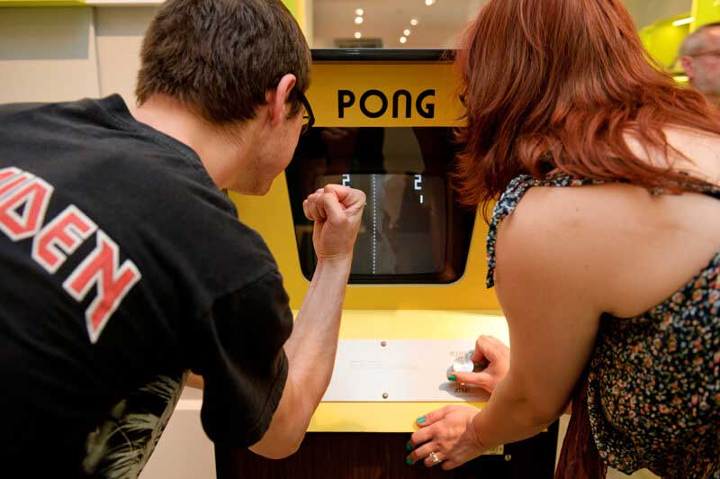
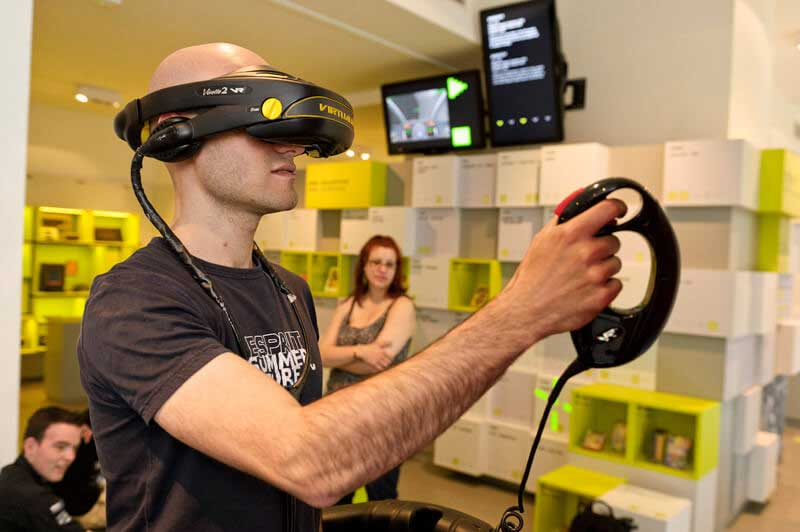
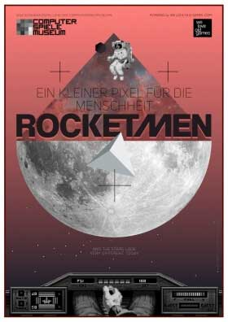
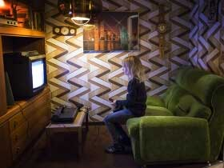
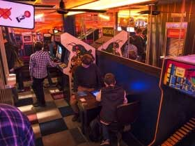
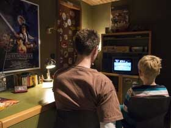
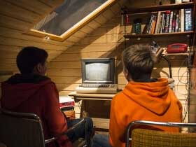

THE MUSEUM
PERMANENT EXHIBITIONS
Here, you can meet them all! The top performers and other famous pieces such as the legendary Pong-Machine, Nimrod, PainStation, and the Giant Joystick are all here for you to play with. Historical treasures like “PolyPlay” as well as games for dancing and movement are all part of our exhibition containing more than 300 objects altogether. Rare originals, classics still in working order and unique pieces of art – all take their place among the exhibits. With you on board, an entertaining journey through the 21st century can begin. Read more


SPECIAL EXHIBITIONS
ROCKET MEN - A GIANT PIXEL FOR MANKIND
A special exhibition at Computerspiele Museum 17 October 2016 - 15 January 2017

From time immemorial looking at the sky brimming with stars has inspired our curiosity and our desire to travel. Compared to this infinity we feel our earth to be rather small and confined. Space, then, at the beginning of the 21st century, is something we still are craving for, because it suggests endless exploration, while at the same time it frightens us thanks to its threats and dangers.
By the middle of the 20th century mankind was finally able to leave the earth. In a spectacular decade developments somersaulted. First, in 1957, first a Soviet satellite and then Laika, a she-dog, were shot into the orbit. Later, in 1961 Yuri Gagarin became an instant hero as the first man in space, and, finally, in 1969, a man walked on the moon. Video games, which are by-products of these technological revolutions, are inspired by this insatiable drive to explore. They let us experience things beyond human understanding.
Our special exhibition "Rocket Men" invites you to put on your spacesuit, so that you can travel through unknown solar systems and spartan vector spaces to explore our future between pixelated stars.
This show has been curated and is maintained by weloveoldgames.com
Every day 10 am – 8 pm
The regular ticket will admit you to this special exhibition.
STARRING: THE GAMES
How the digital games entered our lives
The special exhibition „Starring: the Games“ allows the visitors to dive into an era, when computer games in conjunction with digital technologies conquered our everyday lives. This time travel begins with arcade video machines accessible to the public and then introduces home consoles from different decades. By playing the games on original machines set in authentically recreated environments visitors can play through the beginnings of our digital information society. Contemporary photos and personal accounts complement the picture of an epoch, when computers became part of popular culture. Read more



